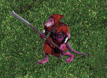

| Original Name | Nom Français |
| Skraug Standanbonkah | Skraug Standanbonkah |
|
 |
|
| Lieu |
| Territoire des skraugs rouges, Cave Skraug |
| Drops |
| Scalp de Moon Tug - Arc primitif skraugh - Potion de guérison critique - Potion de guérison - blessures graves - Agate Brute - Lame d'héroïsme - Pierre de Lune Finement Taillée |
| Commentaires |
| Pas de Commentaires |